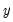
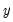

In entering the assignment statements, you need only make two minor changes to the text above. First, the series keyword must be removed from the beginning of each line (since the likelihood specification implicitly assumes it is present). Second, an extra line must be added to the specification which identifies the name of the series in which the likelihood contributions will be contained. Thus, you should enter the following into your log likelihood object:
The first line in the log likelihood specification, @logl logl1, tells EViews that the series LOGL1 should be used to store the likelihood contributions. The remaining lines describe the computation of the intermediate results, and the actual likelihood contributions.


 , , and
, , and  are the observed series (data) and are the parameters of the model. The log likelihood function (the log of the density of the observed data) for a sample of
are the observed series (data) and are the parameters of the model. The log likelihood function (the log of the density of the observed data) for a sample of  observations can be written as:
observations can be written as: is the standard normal density function.
is the standard normal density function. :
: